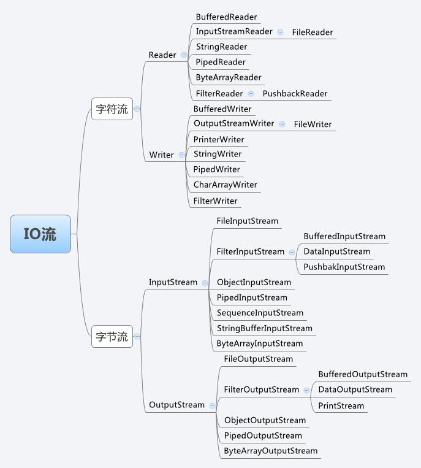

这个算是我的第一篇博客吧，我先从Java开始
面向对象概念
面向对象是一种思想，世间万物都可以看做一个对象，这里只讨论面向对象编程（OOP），Java 是一个支持并发、基于类和面向对象的计算机编程语言。面向对象软件开发具有以下优点：
- 代码开发模块化，更易维护和修改。
- 代码复用性强。
- 增强代码的可靠性和灵活性。
- 增加代码的可读性。
面向对象的特征
封装、继承、多态、抽象
封装，给对象提供了隐藏内部特性和行为的能力。对象提供一些能被其他对象访问的方法来改变它内部的数据。在 Java 当中，有 4 种修饰符： default、public、private 和 protected 。每一种修饰符给其他的位于同一个包或者不同包下面对象赋予了不同的访问权限。
下面列出了使用封装的一些好处：- 通过隐藏对象的属性来保护对象内部的状态。
- 提高了代码的可用性和可维护性，因为对象的行为可以被单独的改变或者是扩展。
- 禁止对象之间的不良交互提高模块化。
继承，给对象提供了从基类获取字段和方法的能力。继承提供了代码的重用行，也可以在不修改类的情况下给现存的类添加新特性。
多态，是编程语言给不同的底层数据类型做相同的接口展示的一种能力。一个多态类型上的操作，可以应用到其他类型的值上面。
抽象，是把想法从具体的实例中分离出来的步骤，因此，要根据他们的功能而不是实现细节来创建类。
Java 支持创建只暴漏接口而不包含方法实现的抽象的类。这种抽象技术的主要目的是把类的行为和实现细节分离开。
接口与抽象类的区别？
首先要搞懂什么是抽象类，什么是接口
接口
- 接口不能被实例化
- 接口只能包含方法声明
- 接口的成员包括方法、属性、索引器、事件
- 接口中不能包含常量、字段(域)、构造函数、析构函数、静态成员
抽象类
抽象类不能创建实例，它只能作为父类被继承。抽象类是从多个具体类中抽象出来的父类，它具有更高层次的抽象。从多个具有相同特征的类中抽象出一个抽象类，以这个抽象类作为其子类的模板，从而避免了子类的随意性。
- 抽象方法只作声明，而不包含实现，可以看成是没有实现体的虚方法
- 抽象类不能被实例化
- 抽象类可以但不是必须有抽象属性和抽象方法，但是一旦有了抽象方法，就一定要把这个类声明为抽象类
- 具体派生类必须覆盖基类的抽象方法
- 抽象派生类可以覆盖基类的抽象方法，也可以不覆盖。如果不覆盖，则其具体派生类必须覆盖它们
接口与抽象类的区别
- 抽象类可以有构造方法，接口中不能有构造方法。
- 抽象类中可以有普通成员变量，接口中没有普通成员变量
- 抽象类中可以包含静态方法，接口中不能包含静态方法
- 一个类可以实现多个接口，但只能继承一个抽象类。
- 接口可以被多重实现，抽象类只能被单一继承
- 如果抽象类实现接口，则可以把接口中方法映射到抽象类中作为抽象方法而不必实现，而在抽象类的子类中实现接口中方法
接口和抽象类的相同点
- 都可以被继承
- 都不能被实例化
- 都可以包含方法声明
- 派生类必须实现未实现的方法
Java IO

Java 序列化
序列化就是一种用来处理对象流的机制，所谓对象流也就是将对象的内容进行流化。
- 可以对流化后的对象进行读写操作，也可将流化后的对象传输于网络之间。
- 序列化是为了解决在对对象流进行读写操作时所引发的问题。
反序列化的过程，则是和序列化相反的过程。
对于不想进行序列化的变量，使用 transient 关键字修饰。
- 当对象被序列化时，阻止实例中那些用此关键字修饰的的变量序列化。
- 当对象被反序列化时，被 transient 修饰的变量值不会被持久化和恢复。
- transient 只能修饰变量，不能修饰类和方法。
对象克隆
一般来说，有两种方式：
- 实现 Cloneable 接口，并重写 Object 类中的 #clone() 方法。可以实现浅克隆，也可以实现深克隆。
- 实现 Serializable 接口，通过对象的序列化和反序列化实现克隆。可以实现真正的深克隆。
Java中的异常类有哪几类?分别怎么使用?
说到异常的分类先从Throwable类说起，Throwable类是Java异常类型的顶层父类，一个对象只有是 Throwable 类的（直接或者间接）实例，他才是一个异常对象，才能被异常处理机制识别。JDK中内建了一些常用的异常类，我们也可以自定义异常。
Exception分为CheckedException和RuntimeException，所有RuntimeException类及其子类的实例被称为Runtime异常，不属于该范畴的异常则被称为CheckedException。
Error是程序无法处理的, 如果OutOfMemoryError、OutOfMemoryError等等, 这些异常发生时, java虚拟机一般会终止线程。
运行时异常都是RuntimeException类及其子类,如 NullPointerException、IndexOutOfBoundsException等, 这些异常是不检查的异常, 是在程序运行的时候可能会发生的, 所以程序可以捕捉, 也可以不捕捉。这些错误一般是由程序的逻辑错误引起的, 程序应该从逻辑角度去尽量避免。
检查异常是运行时异常以外的异常, 也是Exception及其子类, 这些异常从程序的角度来说是必须经过捕捉检查处理的, 否则不能通过编译. 如IOException、SQLException等。

编译时异常
常见的编译时异常有:
- IOException
- SQLException
- CloneNotSupportedException
- ParseException
- ClassNotFoundException
- NoSuchMetodException
运行时异常
常见的运行时异常有:
- NullPointerException: 空指针异常,一般出现于数组,空对-象的变量和方法
- ArrayIndexOutOfBoundsException: 数组越界异常
- ArrayStoreException: 数据存储异常
- NoClassDefFoundException: java运行时系统找不到所引用的类
- ArithmeticException: 算数异常,一般在被除数是0中
- ClassCastException: 类型转换异常
- IllegalArgumentException: 非法参数异常
- IllegalThreadStateException: 非法线程状态异常
- NumberFormatException: 数据格式异常
- OutOfMemoryException: 内存溢出异常
- PatternSyntaxException: 正则异常
- ConcurrentModificationException: 并发修改异常
自定义异常
创建一个类继承RuntimeException,这样就能创建一个运行时异常
1 | public class TooMuchMoneyException extends RuntimeException{ |
异常的使用的注意地方
- 不要将异常处理用于正常的控制流（设计良好的 API 不应该强迫它的调用者为了正常的控制流而使用异常）。
- 对可以恢复的情况使用受检异常，对编程错误使用运行时异常。
- 避免不必要的使用受检异常（可以通过一些状态检测手段来避免异常的发生）。
- 优先使用标准的异常。
- 每个方法抛出的异常都要有文档。
- 保持异常的原子性
- 不要在 catch 中忽略掉捕获到的异常。
如果要创建一个检查性异常,就继承Exception
1 | public class NotSuchMoneyFoundException extends Exception{ |
反射的用途及实现
Java 反射机制主要提供了以下功能：
- 在运行时构造一个类的对象。
- 判断一个类所具有的成员变量和方法。
- 调用一个对象的方法。
- 生成动态代理。
反射的应用很多，很多框架都有用到：
- Spring 框架的 IoC 基于反射创建对象和设置依赖属性。
- Spring MVC 的请求调用对应方法，也是通过反射。
- JDBC 的 Class#forName(String className) 方法，也是使用反射。
Class.forName 和 ClassLoader 的区别
这两者，都可用来对类进行加载。差别在于：
- Class.forName(…) 方法，除了将类的 .class 文件加载到JVM 中之外，还会对类进行解释，执行类中的 static 块。
- ClassLoader 只干一件事情，就是将 .class 文件加载到 JVM 中，不会执行 static 中的内容，只有在 newInstance 才会去执行 static 块。
Class#forName(name, initialize, loader) 方法，带参函数也可控制是否加载 static 块，并且只有调用了newInstance 方法采用调用构造函数，创建类的对象。
Java 对象创建的方式
- 使用 new 关键字创建对象。
- 使用 Class 类的 newInstance 方法(反射机制)。
- 使用 Constructor 类的 newInstance 方法(反射机制)。
- 使用 clone 方法创建对象。
- 使用(反)序列化机制创建对象。